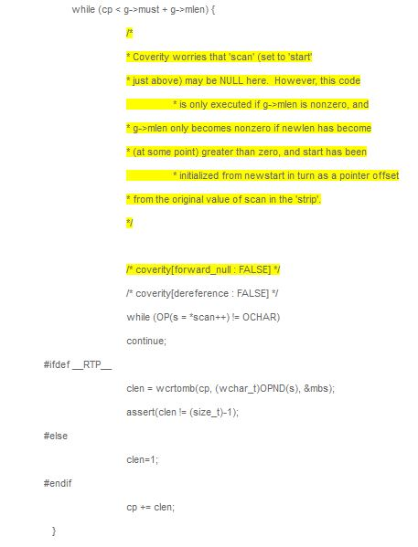
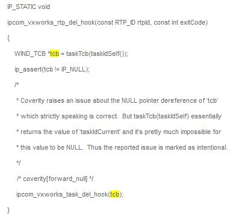
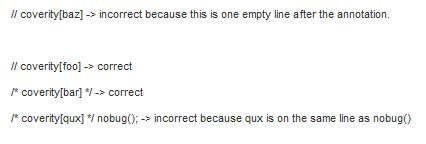
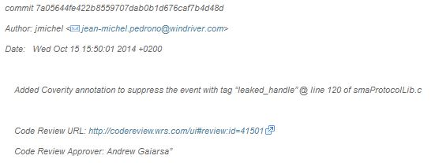

Maintaining Coverity “Clean” Code¶
Purpose¶
This guideline describes all Coverity related information to help teams understand what kinds of Coverity checks are performed on VxWorks. This guideline document sets the expectations and how Coverity warnings should be handled. Coverity goal is to have zero warnings!
Important References¶
Targets list that Coverity covers
How to Run Coverity for VxWorks 7 Before Running CI Launcher
Component Definition & Coverage¶
The components definition for the latest Coverity version 2019.03 is here: Coverity Components Definition
Coverity execution and report¶
To have better support to new CI model, Coverity report strategy is defined as below:
Daily Coverity scan and report will be performed on CI branch.
After release SPIN is ready, daily Coverity scan and report will be performed on Release SPIN.
The two Coverity scan will be performed in parallel.
Notes: For coverity scan on SPIN, the component as test can not be covered as SPIN only includes codes delivered to customers.
The scan target: http://ctu-coverity-prod/source/xref/coverity-config/cov-script/launch_vx7-integration.sh#16
the targets list that Coverity covers
The scan results:
Coverity Upgrade Strategy¶
The following table shows the map between Coverity version and VxWorks version:
Coverity Version |
VxWorks Version |
Notes |
Coverity 6.6.2 |
VxWorks 6.9 (till 6.9.4.12)/VxWorks 7 SR0530 and earlier VxWorks 7 |
Not used for release after 6.9.4.12, See Vx6.9 RCPL Coverity Process Because Coverity 6.6.2 is end of life, VxWorks 6.9 is using the same Coverity version with VxWorks 7. Developers MUST clean up all Coverity warnings for newly added code. |
Coverity 8.7.1 |
VxWorks 7 SR0530 |
|
Coverity 2018.03 |
VxWorks 7 SR0540 |
|
Coverity 2018.09 |
VxWorks 7 SR0600 |
|
Coverity 2019.03 |
VxWorks 7 SR0610/SR0620/SR0630/SR0640/SR0650 |
|
Coverity 2020.03 |
In estimation if needs to be updated, suppose it can generate PDF format of report and not have too much new Coverity defects and warnings to SR0650 |
Desktop Coverity Tool¶
The desktop Coverity tool can be found at:
Alameda: /folk/common/cov-analysis-desktop/Prevent/prevent.pl
Beijing: /folk/beijing/tools/cov-analysis/Prevent/prevent.pl
Chengdu: /folk/chengdu/tools/cov-analysis/Prevent/prevent.pl
The usage example: /folk/chengdu/tools/cov-analysis/Prevent/prevent.pl yourMakeCommand
Note: The desktop Coverity is Coverity 2018.03. The desktop Coverity is no longer supported from Coverity 2018.09.
More information: How to Run Coverity for VxWorks 7 Before Running CI Launcher
Coverity Defect Suppression using Annotation¶
Developers encountering Coverity defests/warnings can potentially suppress them using the annotation “coverity[xxx]”, but this is the last thing to consider unless there’s enough evidence.
When using this annotation, developers must provide justification in comments (immediately preceding the annotation)
The justification is required so as to provide a rationale to customers as to why the suppression is required.
Two types of annotation can be used: Intentional or False Positive.
False Positive: Coverity[xx:FALSE]
An annotation marking a Coverity finding as a “false positive” should only be used if Coverity is actually wrong. For example, if a “forward_null” error is detected in some source code line, yet it’s impossible for a NULL pointer to be de-referenced in that source code line, then a “coverity[forward_null : FALSE]” annotation should be used to mark the Coverity finding as a “false positive”. The following specific example from pkgs/os/utils/unix/regex/regcomp.c provides a good description of why this particular NULL pointer de-reference is a “false positive”:

Intentional: Coverity[xx]
An annotation marking a Coverity finding as “intentional” should be used when Coverity is actually correct, but it was concluded that the code is behaving as intended. For example, a NULL pointer de-reference error detected by Coverity could be deemed “intentional” in cases where performance would suffer significantly if the pointer was checked for NULL. In other words, the lack of checking for a NULL pointer was “intentional” to ensure good performance. For example, in the following code:

The reference to the ‘tcb’ automatic variable would be flagged as a NULL pointer de-reference. That would be a correct finding since taskTcb() returns a pointer value, and there is no code in the ipcom_vxworks_rtp_del_hook() function that ensures a NULL value is never de-referenced (note the ip_assert() is typically a NOOP in standard builds). However, Coverity doesn’t have a systems/OS view of VxWorks, and thus cannot “understand” that taskIdSelf() simply returns the value of ‘taskIdCurrent’ variable (which is a slot in the vxKernelVars[] array for SMP), and taskTcb() simply returns the input parameter. So it’s pretty much impossible for ‘tcb’ to be a NULL pointer, and thus this finding would be categorized as “intentional”.
Other Annotation Examples
A code annotation always appears at the beginning of a C comment (/* coverity[…]… ) or a C++ comment (// coverity[…]… ) and applies to the first line of code after the comment that is neither empty (white space) nor a comment. Some samples are as following:

As with any other VxWorks related code change, the code review process needs to be followed regarding the addition of Coverity annotations to the source code. The architect/PA-Owner responsible for the technology must be added as a “Reviewer” to the code review. When the source code is checked-in, the commit text needs to indicate: (1) what annotation was added, (2) a link to the code review, and (3) the name of the architect/PA-Owner. The following git commit log serves as an example of the information required and the desired formatting:

Change Log¶
Date |
Change Request ID |
Version |
Change By |
Description |
08/04/2020 |
N/A |
0.1 |
Shree Vidya Jayaraman |
Transferred content from Jive page: DOC-84297 |